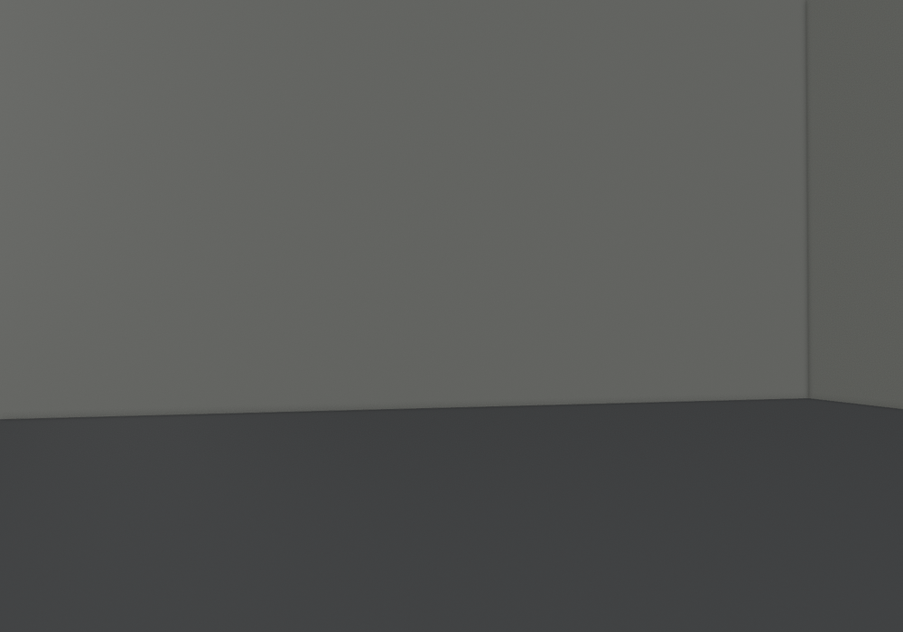
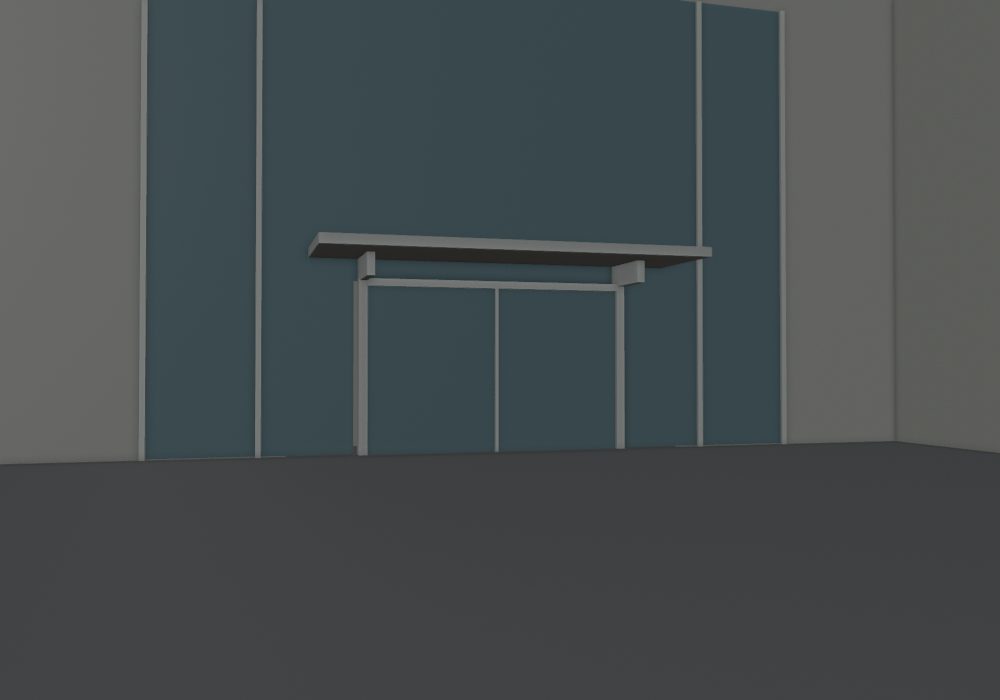
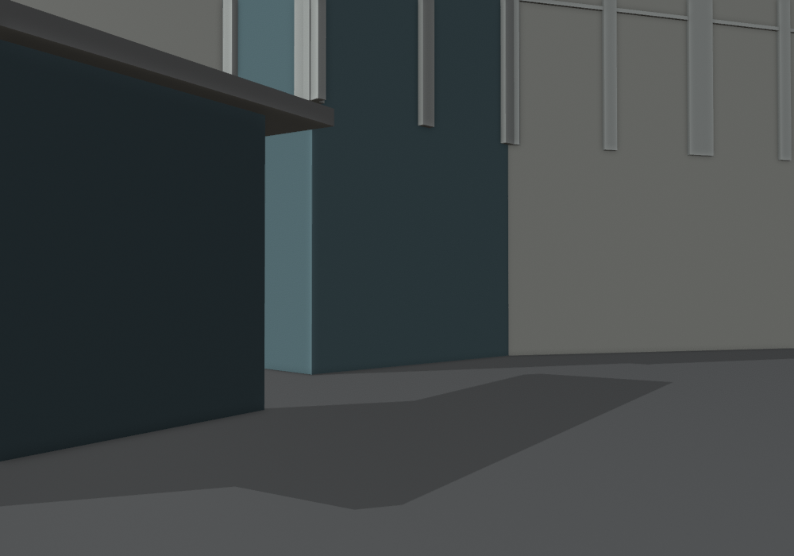
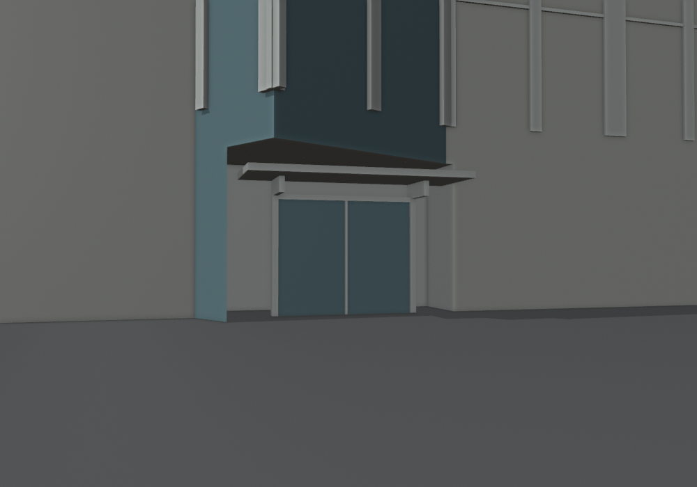
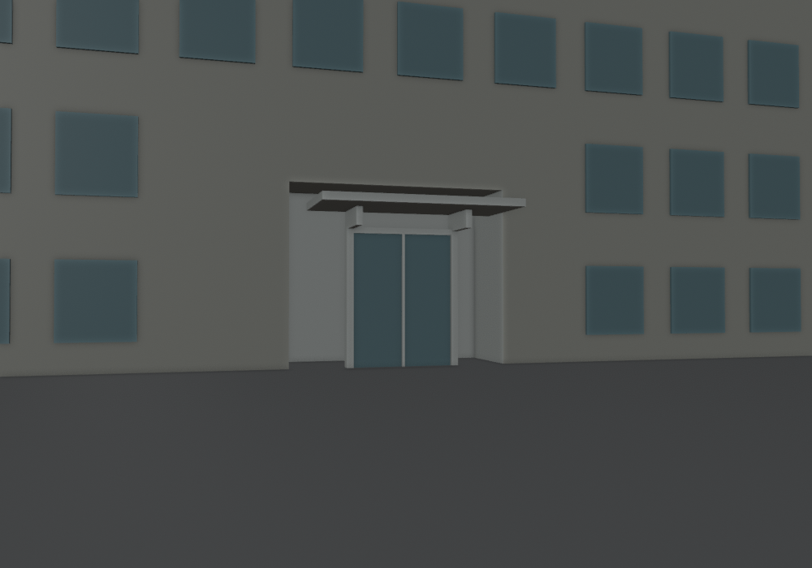
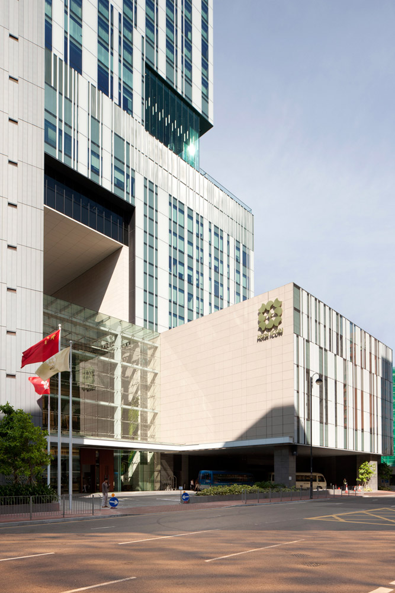

Hotel ICON：三個入口的配準與幾何驗收
2026-10-19。地下圖先配準到目前 OSM 校園座標，再選各自所屬的外牆。下列修改前後均使用相同相機，眼高 1.7 m，讀取實際匯出的 GLB。
6 個配準控制點 · RMSE 0.29 m3 個獨立檢查點 · RMSE 0.69 m96 個底角 · 0 個問題
以上誤差表示圖像與目前地圖輪廓的配合程度，並非現場測量精度。門寬、雨棚尺寸及垂直標高仍是簡化模型設定。學院與宿舍沒有相同機位的實景照，本頁以 G/F 圖校對位置；不當作 2026 現況逐面驗證。
完整地下圖配準疊圖 · 全部底角與通道檢查 · 控制點與座標
酒店入口

修改前：同一模型位置、同一相機。
修改後：入口、框柱與雨棚保持可見，前方通道通過幾何抽樣。圖紙定位至外牆修整距離：1.19 m；所屬地圖主體：236028379。三組入口不再共用塔樓輪廓。
G/F 圖位置對照
藍圈：人工辨認的入口圖像位置；紅點：配準後貼合所屬外牆的位置。沒有把圖紙標籤方向直接當作模型南北。
學院入口

修改前：同一模型位置、同一相機。
修改後：入口、框柱與雨棚保持可見，前方通道通過幾何抽樣。圖紙定位至外牆修整距離：0.73 m；所屬地圖主體：236028379。三組入口不再共用塔樓輪廓。
G/F 圖位置對照
藍圈：人工辨認的入口圖像位置；紅點：配準後貼合所屬外牆的位置。沒有把圖紙標籤方向直接當作模型南北。
職員宿舍入口
修改前：同一模型位置、同一相機。
修改後：入口、框柱與雨棚保持可見，前方通道通過幾何抽樣。 圖紙定位至外牆修整距離：0.14 m；所屬地圖主體：236028367。三組入口不再共用塔樓輪廓。
G/F 圖位置對照
藍圈：人工辨認的入口圖像位置；紅點：配準後貼合所屬外牆的位置。沒有把圖紙標籤方向直接當作模型南北。
酒店整體外觀參照（非同機位）

酒店玻璃大堂與低座僅作外觀構成參照；模型未逐面還原。
原圖來源：Rocco 地下圖；建築師專案。